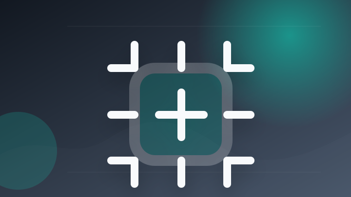
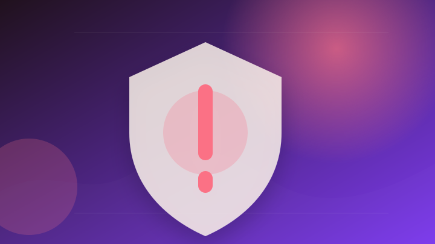
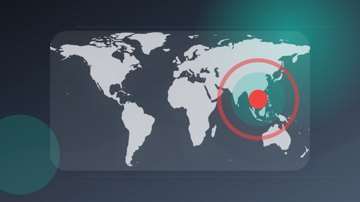
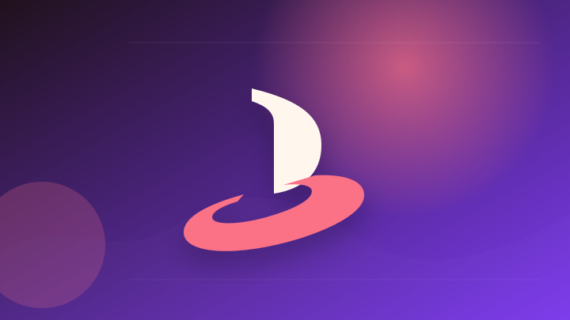
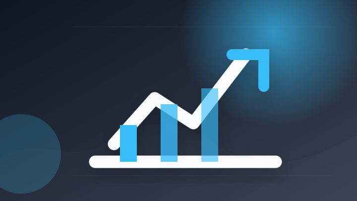
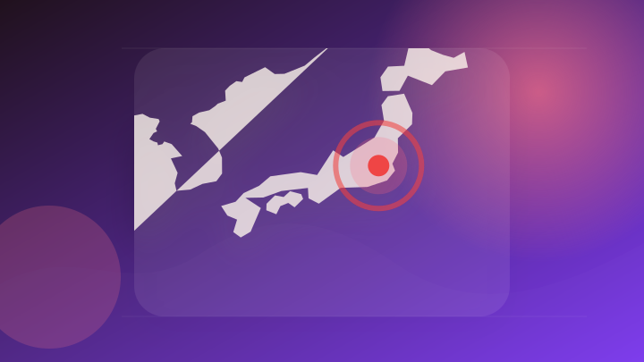

AI
6 topics
選挙時のＳＮＳ偽・誤情報対策強化、改正公選法と改正情プラ法成立…ＡＩ使用の表示義務化 - 読売新聞
選挙時のＳＮＳ偽・誤情報対策強化、改正公選法と改正情プラ法成立…ＡＩ使用の表示義務化 読売新聞
- 注目ポイント
- 実務利用や企業導入の判断材料になりやすい話題です。RSS説明文では「選挙時のＳＮＳ偽・誤情報対策強化、改正公選法と改正情プラ法成立…ＡＩ使用の表示義務化 読売…」と伝えています。出典: 読売新聞
- 見るべきポイント
- 対象になる人、決定済みか検討中か、施行日・申請期限を確認。
2026年の医療業界トレンド - SDKI Analytics
2026年の医療業界トレンド SDKI Analytics
- 注目ポイント
- 実務利用や企業導入の判断材料になりやすい話題です。RSS説明文では「2026年の医療業界トレンド SDKI Analytics」と伝えています。出典: SDKI Analytics
- 見るべきポイント
- 対象者、医療機関・公的機関の根拠、適用時期と注意事項を確認。
「ChatGPT Work」と「Codex」の5時間利用制限が一時的に解除 - ビジネス+IT
「ChatGPT Work」と「Codex」の5時間利用制限が一時的に解除 ビジネス+IT
- 注目ポイント
- 実務利用や企業導入の判断材料になりやすい話題です。RSS説明文では「「ChatGPT Work」と「Codex」の5時間利用制限が一時的に解除 ビジネス+IT」と伝えています。出典: ビジネス+IT
- 見るべきポイント
- 誰に影響するか、いつから変わるか、報道元が示す具体的な根拠を確認。

第980回「AI即戦力仕事術～本当は怖い生成AI～」｜週刊 日経トレンディ＆クロストレンド｜ビジネス - radionikkei.jp
第980回「AI即戦力仕事術～本当は怖い生成AI～」
- 注目ポイント
- 実務利用や企業導入の判断材料になりやすい話題です。RSS説明文では「第980回「AI即戦力仕事術～本当は怖い生成AI～」」と伝えています。出典: radionikkei.jp
- 見るべきポイント
- 誰に影響するか、いつから変わるか、報道元が示す具体的な根拠を確認。
アニメ×AIに「フルスタック」で挑む—AiHUBが目指す制作基盤とは？ - thinkit.co.jp
アニメ×AIに「フルスタック」で挑む—AiHUBが目指す制作基盤とは？ thinkit.co.jp
- 注目ポイント
- 実務利用や企業導入の判断材料になりやすい話題です。RSS説明文では「アニメ×AIに「フルスタック」で挑む—AiHUBが目指す制作基盤とは？ thinkit.c…」と伝えています。出典: thinkit.co.jp
- 見るべきポイント
- 誰に影響するか、いつから変わるか、報道元が示す具体的な根拠を確認。
OpenAI、ChatGPTを組み込んだWebブラウザ「Atlas」の提供終了を発表 - ケータイ Watch
OpenAI、ChatGPTを組み込んだWebブラウザ「Atlas」の提供終了を発表 ケータイ Watch
- 注目ポイント
- 実務利用や企業導入の判断材料になりやすい話題です。RSS説明文では「OpenAI、ChatGPTを組み込んだWebブラウザ「Atlas」の提供終了を発表 ケー…」と伝えています。出典: ケータイ Watch
- 見るべきポイント
- 誰に影響するか、いつから変わるか、報道元が示す具体的な根拠を確認。
IT業界
6 topics
$マイクロン・テクノロジー (MU.US)$ 相場の夏休みだと思って良い子は早く寝ましょう[おやすみ][眠り] せーの、今日︎も👇👇👇 - Moomoo
$マイクロン・テクノロジー (MU.US)$ 相場の夏休みだと思って良い子は早く寝ましょう[おやすみ][眠り] せ…
- 注目ポイント
- 前日の動向として押さえておきたい話題です。RSS説明文では「$マイクロン・テクノロジー (MU.US)$ 相場の夏休みだと思って良い子は早く寝ましょう…」と伝えています。出典: Moomoo
- 見るべきポイント
- 誰に影響するか、いつから変わるか、報道元が示す具体的な根拠を確認。
$マイクロン・テクノロジー (MU.US)$ トランプさん、 助けて - Moomoo
$マイクロン・テクノロジー (MU.US)$ トランプさん、 助けて Moomoo
- 注目ポイント
- 前日の動向として押さえておきたい話題です。RSS説明文では「$マイクロン・テクノロジー (MU.US)$ トランプさん、 助けて Moomoo」と伝えています。出典: Moomoo
- 見るべきポイント
- 誰に影響するか、いつから変わるか、報道元が示す具体的な根拠を確認。
山寺にユニバーサルな新名所「山寺ギャラリア」 精神文化を現代アート・テクノロジーで体験できる 山形｜ニュース - さくらんぼテレビ
山寺にユニバーサルな新名所「山寺ギャラリア」 精神文化を現代アート・テクノロジーで体験できる 山形
- 注目ポイント
- 前日の動向として押さえておきたい話題です。RSS説明文では「山寺にユニバーサルな新名所「山寺ギャラリア」 精神文化を現代アート・テクノロジーで体験でき…」と伝えています。出典: さくらんぼテレビ
- 見るべきポイント
- 誰に影響するか、いつから変わるか、報道元が示す具体的な根拠を確認。
テクノロジーニュース 7月13日：マイクロソフトがWindows 11にAndroidを導入 - Vietnam.vn
テクノロジーニュース 7月13日：マイクロソフトがWindows 11にAndroidを導入 Vietnam.vn
- 注目ポイント
- 前日の動向として押さえておきたい話題です。RSS説明文では「テクノロジーニュース 7月13日：マイクロソフトがWindows 11にAndroidを導…」と伝えています。出典: Vietnam.vn
- 見るべきポイント
- 誰に影響するか、いつから変わるか、報道元が示す具体的な根拠を確認。

セキュリティ分野の1週間（7月6日～7月12日） - Malwarebytes
セキュリティ分野の1週間（7月6日～7月12日） Malwarebytes
- 注目ポイント
- 安全・業務・生活への影響確認が必要な話題です。RSS説明文では「セキュリティ分野の1週間（7月6日～7月12日） Malwarebytes」と伝えています。出典: Malwarebytes
- 見るべきポイント
- 誰に影響するか、いつから変わるか、報道元が示す具体的な根拠を確認。
セキュリティの新指標「日本度」発表--実質的な国内統制とコミットを可視化 - ZDNET Japan
セキュリティの新指標「日本度」発表
- 注目ポイント
- 安全・業務・生活への影響確認が必要な話題です。RSS説明文では「セキュリティの新指標「日本度」発表」と伝えています。出典: ZDNET Japan
- 見るべきポイント
- 誰に影響するか、いつから変わるか、報道元が示す具体的な根拠を確認。
政治
2 topics
政府与党連絡会議 - 首相官邸
政府与党連絡会議 首相官邸
- 注目ポイント
- 制度変更や政策判断につながる可能性がある話題です。RSS説明文では「政府与党連絡会議 首相官邸」と伝えています。出典: 首相官邸
- 見るべきポイント
- 誰に影響するか、いつから変わるか、報道元が示す具体的な根拠を確認。

ザン・ベトナム副首相兼国防大臣による木原内閣官房長官表敬｜外務省 - mofa.go.jp
ザン・ベトナム副首相兼国防大臣による木原内閣官房長官表敬
- 注目ポイント
- 制度変更や政策判断につながる可能性がある話題です。RSS説明文では「ザン・ベトナム副首相兼国防大臣による木原内閣官房長官表敬」と伝えています。出典: mofa.go.jp
- 見るべきポイント
- 誰に影響するか、いつから変わるか、報道元が示す具体的な根拠を確認。
社会
0 topics
前日範囲で十分な公開情報を取得できませんでした。
ゲーム
2 topics

PlayStationのディスク販売終了決定、英小売業界団体が非難 - games.gg
PlayStationのディスク販売終了決定、英小売業界団体が非難 games.gg
- 注目ポイント
- 前日の動向として押さえておきたい話題です。RSS説明文では「PlayStationのディスク販売終了決定、英小売業界団体が非難 games.gg」と伝えています。出典: games.gg
- 見るべきポイント
- 誰に影響するか、いつから変わるか、報道元が示す具体的な根拠を確認。
欧州委員会は、ソニーがPlayStationで物理ディスクを段階的に廃止する決定を制度レベルで防ぐことはほとんどできないと認めています - gamereactor.jp
欧州委員会は、ソニーがPlayStationで物理ディスクを段階的に廃止する決定を制度レベルで防ぐことはほとんどで…
- 注目ポイント
- 前日の動向として押さえておきたい話題です。RSS説明文では「欧州委員会は、ソニーがPlayStationで物理ディスクを段階的に廃止する決定を制度レベ…」と伝えています。出典: gamereactor.jp
- 見るべきポイント
- 対象になる人、決定済みか検討中か、施行日・申請期限を確認。
経済
2 topics

アステナホールディングス株式会社、2026年11月期 第2四半期決算発表のお知らせ - PR TIMES
アステナホールディングス株式会社、2026年11月期 第2四半期決算発表のお知らせ PR TIMES
- 注目ポイント
- 企業活動や市場の見方に影響しやすい話題です。RSS説明文では「アステナホールディングス株式会社、2026年11月期 第2四半期決算発表のお知らせ PR…」と伝えています。出典: PR TIMES
- 見るべきポイント
- 対象期間、金額・変化率、前回との比較、生活や市場への影響を確認。
６社中３社が増収／物価高の影響も各社堅調（2026年7月9日号） - 日流ウェブ
６社中３社が増収／物価高の影響も各社堅調（2026年7月9日号） 日流ウェブ
- 注目ポイント
- 企業活動や市場の見方に影響しやすい話題です。RSS説明文では「６社中３社が増収／物価高の影響も各社堅調（2026年7月9日号） 日流ウェブ」と伝えています。出典: 日流ウェブ
- 見るべきポイント
- 誰に影響するか、いつから変わるか、報道元が示す具体的な根拠を確認。
金融
2 topics
偽の仮想通貨ギフトカードサイトを見分けるのがますます難しくなっている - Malwarebytes
偽の仮想通貨ギフトカードサイトを見分けるのがますます難しくなっている Malwarebytes
- 注目ポイント
- 前日の動向として押さえておきたい話題です。RSS説明文では「偽の仮想通貨ギフトカードサイトを見分けるのがますます難しくなっている Malwarebyt…」と伝えています。出典: Malwarebytes
- 見るべきポイント
- 誰に影響するか、いつから変わるか、報道元が示す具体的な根拠を確認。

上場企業はなぜ仮想通貨を買うのか 企業価値の新常識 - 日本経済新聞
上場企業はなぜ仮想通貨を買うのか 企業価値の新常識 日本経済新聞
- 注目ポイント
- 前日の動向として押さえておきたい話題です。RSS説明文では「上場企業はなぜ仮想通貨を買うのか 企業価値の新常識 日本経済新聞」と伝えています。出典: 日本経済新聞
- 見るべきポイント
- 誰に影響するか、いつから変わるか、報道元が示す具体的な根拠を確認。